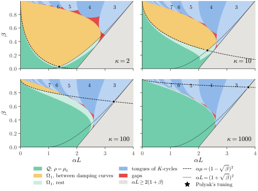
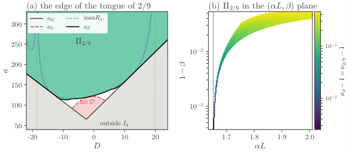

The heavy-ball worst-case rate and convergence-threshold results are accompanied by formal proofs in Lean.
Abstract
We determine the worst-case behavior of the heavy-ball method on smooth strongly convex functions, first for Polyak's quadratic-optimal parameters and then for arbitrary constant parameters. For Polyak's tuning, the exact dimension-uniform exponential rate is the largest growth factor of an interpolable mixture of rotating geometric sequences. Four algebraic families determine this rate at every condition number. Two frequencies suffice, and one function in dimension five attains the rate at every horizon up to constant factors. We recover the sharp convergence threshold $9+4\sqrt5$ of Badithela and Seiler. For general tunings, an exact linear feasibility criterion characterizes dimension-uniform linear convergence through the angle between the characteristic polynomials of the two extreme quadratics. This gives a continuous condition-number threshold and resolves the second heavy-ball riddle of Goujaud, Taylor and Dieuleveut. The regions between consecutive cycle tongues are Farey gaps, each containing convergent and divergent tunings. Regular portions of the threshold surface are analytic plateaus with fixed periodic frequency support. Every rational rotation number in a gap anchors a single-harmonic plateau; mixed-harmonic plateaus and an exact two-lag threshold point also occur. Along tongue edges, explicit multiplier inequalities and second-order expansions of competing Farey fans bound the transition from single-harmonic to mixed-harmonic extremals. The rate bounds and the extremal constructions follow from a common interpolation and separation argument that preserves initialization with zero momentum.
Problem
The worst-case behavior of Polyak's heavy-ball method on smooth strongly convex functions was not fully determined. The open questions were the exact dimension-uniform rate under Polyak's tuning and a convergence criterion for arbitrary constant parameters.
Approach
The worst-case rate is reduced to a spectral interpolation problem: find the largest growth factor of interpolable mixtures of rotating geometric sequences. For Polyak's tuning, four algebraic families with at most two frequencies determine the rate. For general tunings, an exact linear feasibility criterion uses the angle between the characteristic polynomials of the two extreme quadratics, analyzed with Farey geometry and analytic continuation. The mathematical results are accompanied by formal proofs in Lean.
Results
The exact rate under Polyak's tuning is attained up to constants at every horizon by a single five-dimensional function, recovering the sharp threshold κ_c = 9+4√5. For general tunings, a continuous condition-number threshold is obtained, resolving the second heavy-ball riddle of Goujaud, Taylor and Dieuleveut. The analysis also describes Farey gaps and single- and mixed-harmonic plateaus on the threshold surface.

Figure 4: Phase diagrams for \kappa=2,10,100,1000 . Green: \mathcal{Q} , where \rho=\rho_{\rm q} . Yellow and pale green: the remaining lag-one convergence region \Omega_{1} . Blue: integer-cycle tongues. Violet: additional rational-cycle tongues. Red: the remaining displayed gap regions. Grey: quadratic instability. The damping curves are dashed and dotted; the star is Polyak’s tuning.

Figure 7: The single-harmonic plateau of 2/9 . (a) In edge coordinates: the gap boundary a_{E} , the curvature obstruction a_{2} (dashed), and a numerical evaluation of the adjacent-lag bound \max R_{\lambda^{\rm e}} (dotted). The solid curve approximates a_{F} by finite-lag programs. (b) The image in (\alpha L,1-\beta) , with logarithmic vertical scale; its limiting abscissa is 4\sin^{2}(2\pi/9)